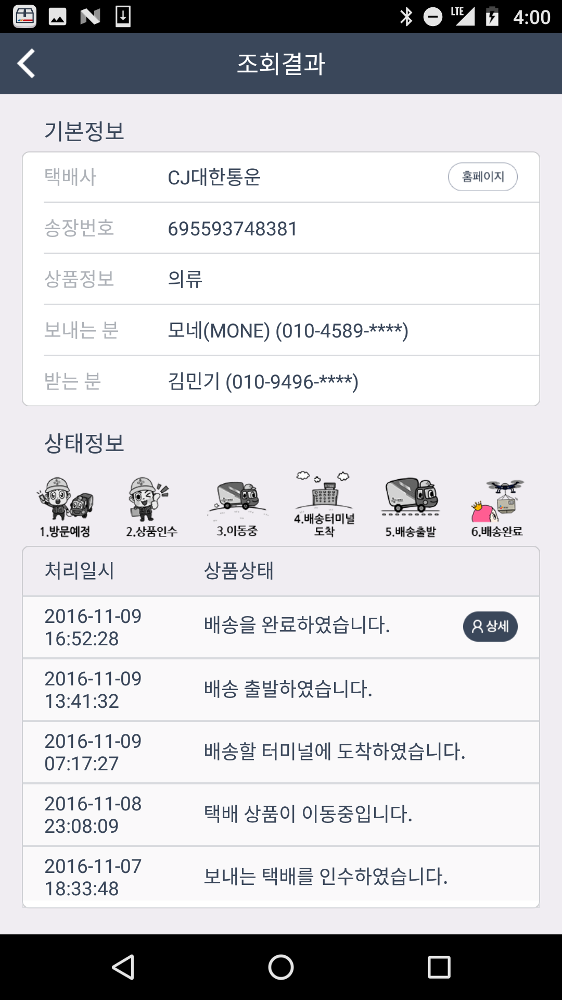
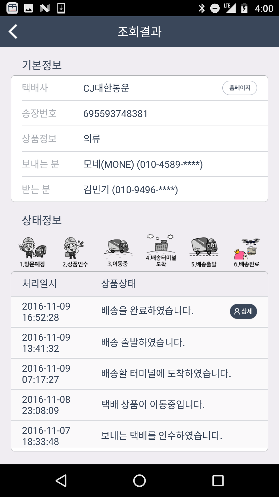
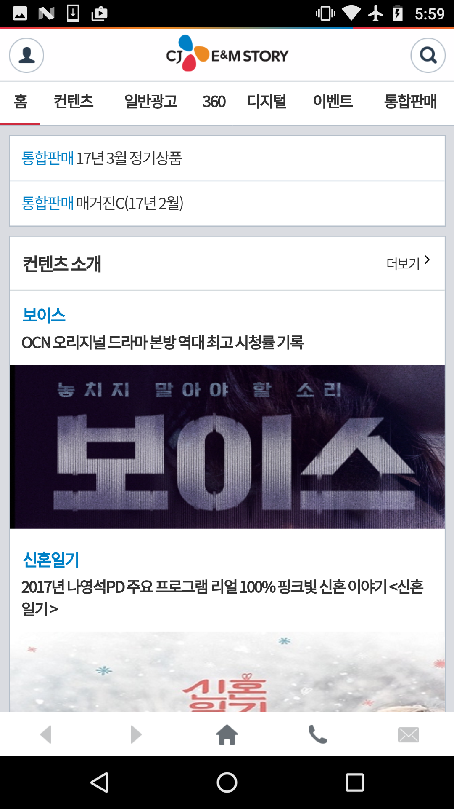
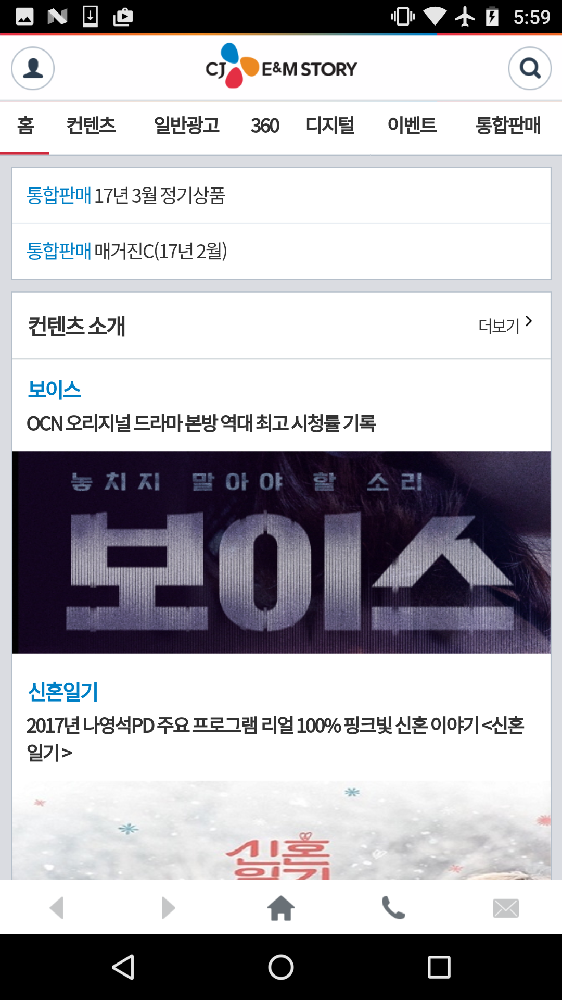

Android Developer
안녕하세요, 재기발랄한 4년차 안드로이드 개발자 김민기입니다. 현재 안드로이드 네이티브 앱과 웹앱 운영/개발 업무를 담당하고 있으며, 기본적인 안드로이드 Life cycle, 서버통신, 오픈소스 활용 경험, Google Analytics 등의 역량을 보유하고 있습니다. 스스로 도전하고 성취하기를 좋아하여, 지속적으로 새로운 기술들을 경험하고 습득해 효율적인 코드를 작성하는 개발자로 성장하고 싶습니다.
Experiences
- 안드로이드 개발/운영 담당
- 운영 앱 : CJ대한통운, E&M AIM, E&M STORY
- 안드로이드, 서버통신, GCM, SQLite 등 기술 보유
- 매 달 CJ대한통운 앱 개선사항을 반영하여 구글플레이에 업로드
- 팀 프로젝트 안드로이드 개발 참여
- 참여 앱 : TMS, Mobile SDK Library, CJWellness
- OKhttp, Realm, Butterknife 등 다양한 오픈소스 라이브러리 사용
- Google Analytics 기술담당
- 운영 안드로이드 앱 Google Analytics 적용
- 사내 운영자들에게 Google Analytics 적용 방법 가이드
Projects
CJ대한통운 앱은 택배예약과 택배상품 추적을 제공하는 서비스.
다운로드 수 1,200,000 이상
- 사용기술 : Android, Fabric, GCM, BCR

 
 광고주 디지털 마케팅목표에 적합한 인플루언서를 추천 및 매칭시켜주는 서비스.
- 사용기술 : Android, GCM

웹앱으로, E&M의 상품정보 및 컨텐츠 정보를 열람할 수 있는 서비스
- 사용기술 : Android, GCM
 
 CJ대한통운 택배직원용 배송 앱
- 회사 팀 프로젝트
- 사용기술 : Android
- 맡은 부분 : 로그인 페이지, 설정 페이지


사내 모바일 라이브러리. 모바일 프로젝트 사용 용도로 개발됨
사내 기술혁신 상 수상
- 회사 팀 프로젝트
- 사용기술 : Android, Realm, Glide, Naver Map API, Google Map API.
- 맡은 부분 : Database Helper, Image Manager, Map Helper
런닝머신에 탑재된 안드로이드 어플리케이션
- 회사 팀 프로젝트.
- 사용기술 : Android, HelloChart, JSON parsing and dynamic xml layout design
- 맡은 부분 : 메인화면에 들어가는 움직이는 라인차트 그래프 개발.
- 운동 중 발생하는 칼로리, 속도, 등을 보여주는 동적 레이아웃 화면 개발.
간단하게 검색하는 날씨검색 앱
- 개인 작업.
- 사용기술 : Android, OKhttp, Butterknife, Firebase Storage, apixu weather API
Record your happiness everyday.
- Solo work. Android, Realm, Butterknife.
Crash Reporter는 운영 앱들에 대해서 발생하는 에러/오류 메시지를 리포팅하는 서비스.
해당 내용을 담당자에게 이메일 발송 가능, 리포팅 주기를 설정할 수 있음
- 개인작업
- 사용기술 : Android, UrQA
원스터의 레벨을 조절할 수 있는 운영 관리자용 앱.
사용자 아이디 조회 후, 서버통신을 통해 해당 원스터의 레벨을 조절할 수 있음.
- 개인 작업
- 사용기술 : Android, http-client Networking, JSON
Previous Experiences
- UIAutomater를 활용한 자바프로그램 개발
- 안드로이드 앱 테스트를 위한 방법론 자료 수집 및 활용
- 엔지니어로 소규모 팀 프로젝트에 참여하여, 안드로이드 앱 프로토타입 개발
- 앱 서비스의 기획부터 프로토타입 개발까지 전반적인 과정을 경험함
UIAutomator program
- 개인 작업. 사용기술 : JAVA, UIAutomator.
SK플래닛에서 운영하는 모든 앱을 자동테스트 하는 프로그램. 앱의 실행 속도 측정 및 오류 탐지기능 제공.
- 보안 소프트웨어 제품에 대한 블랙박스 테스팅 및 버그/개선사항들을 리포팅하는 업무 담당
- 테스팅을 도울 수 있는 Auto-it script prorgram을 자발적으로 개발하여 팀내에 공유함
- 신규 보안 소프트웨어 제품의 테스트케이스 목록과 사용자 메뉴얼 작성
- 버그킹 어워드 수상 : 신규 프로젝트에 참여하여 최다 버그 리포팅함
Auto-it program
- 개인작업. 사용기술 : Auto-it Script
보안프로그램 테스트를 효율적으로 하도록 테스트 관련 도구 자동실행 프로그램. 바이러스 설치, 가상 네트워크 공격, 키로거 실행, 감염된 웹브라우저 자동 접근 등 지원